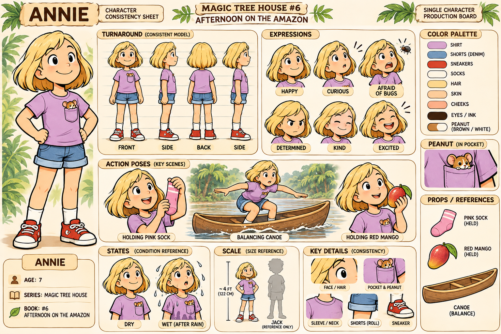
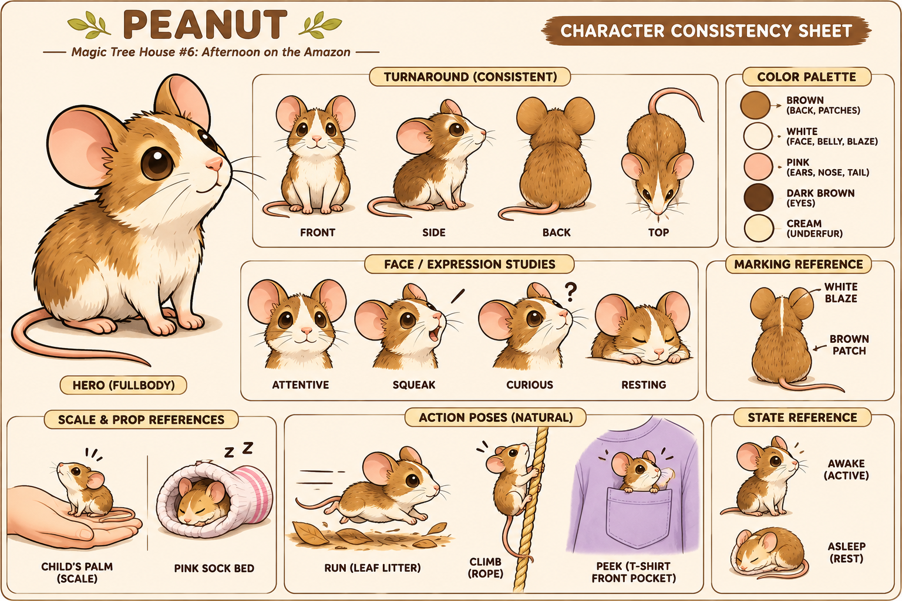

Read native Jack, Annie and Peanut sheets before generation. Keep wet red long sleeves and jeans for Jack, wet lavender T-shirt and denim shorts for Annie. Peanut sits on book stacks after entry. Wooden treehouse, rectangular window, floor trapdoor, stacks of books, one tan backpack. Scenes254–259 show entry, thanks, notebook and search for Pennsylvania book. No return travel or mango before source introduction.


